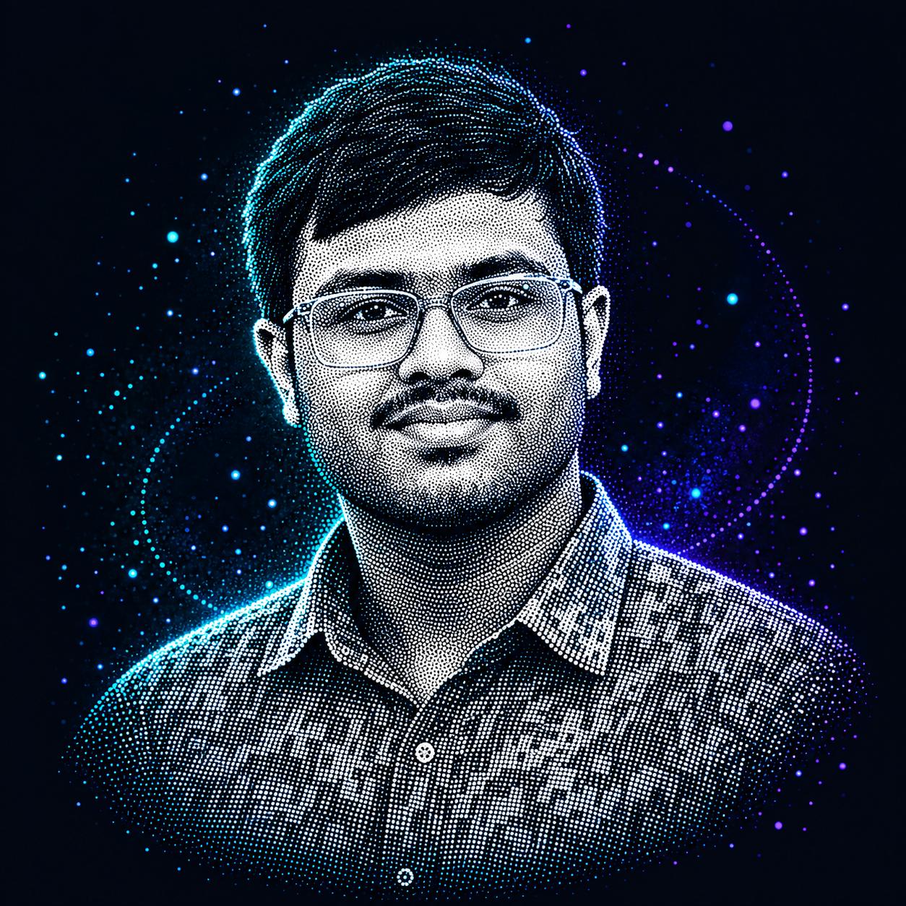

🧠
Problem Solving
Practising data structures, algorithms, and core programming concepts.
A CSE student and digital craftsman learning by building, experimenting, and turning ideas into useful software.

I’m strengthening my fundamentals while exploring modern software development.
Practising data structures, algorithms, and core programming concepts.
Learning through practical projects, iteration, and debugging.
Discovering web technologies and AI/ML while building a strong foundation.
Technologies I use or am exploring. On GitHub, the README stack can be refreshed automatically with GitHub Actions.
A few areas I’m working on. Replace the links with your exact repository URLs.
Healthcare-focused project developed for Smart India Hackathon, with a focus on making healthcare support more accessible.
Programming practice, sorting algorithms, linked lists, and data structures in C.
Experiments in frontend development, interface design, and practical web projects.
Java · OOP · DSA · Web Development · AI / ML
Find my work on GitHub. Add your preferred contact or social links here when ready.